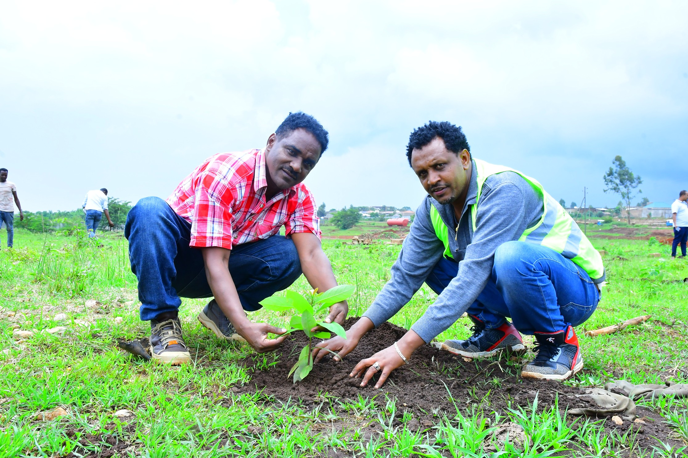

Our feeding program aims to provide nutritious meals to those in need, ensuring that every individual
receives the sustenance they require for a healthy and fulfilling life.
JOIN US
Our water program is dedicated to ensuring access to clean and safe drinking water for communities in need.
We strive to implement sustainable solutions that address water scarcity and promote the well-being of
individuals and families.
JOIN US
The healthcare programs offer vital medical services communities, including preventive care,
treatment for various health conditions, maternal and child health.Our dedicated team and clinics aim to
enhance well-being and health outcomes in marginalized
areas
JOIN US

Our tree planting initiative aims to provide a sustainable environment for communities, ensuring that every
tree planted contributes to cleaner air, soil conservation, and a healthier ecosystem for a thriving and
sustainable future.
JOIN US
Our fundraising events aim to gather support and resources for vital causes, ensuring that every participant
contributes to making a meaningful impact on the lives of those in need.
JOIN US

Our sports infrastructure development initiative aims to create modern and accessible facilities for
athletes and communities, ensuring that every individual has the opportunity to engage in sports and
physical activities, promoting health and well-being for all.
JOIN US
Our infrastructure development program aims to enhance transportation networks by constructing efficient and
sustainable road systems, ensuring that every community has access to safe and reliable transportation for
economic growth and connectivity.
JOIN US
Our community cleaning initiative aims to foster a cleaner and healthier environment for all residents,
ensuring that every individual plays a part in preserving the beauty of our surroundings and reducing
pollution for a more sustainable future
JOIN US

To foster a culture of teamwork, our initiative encourages collaboration and mutual support, ensuring that
every member of the team contributes their unique skills and perspectives toward shared goals, creating a
strong and unified community.
JOIN US